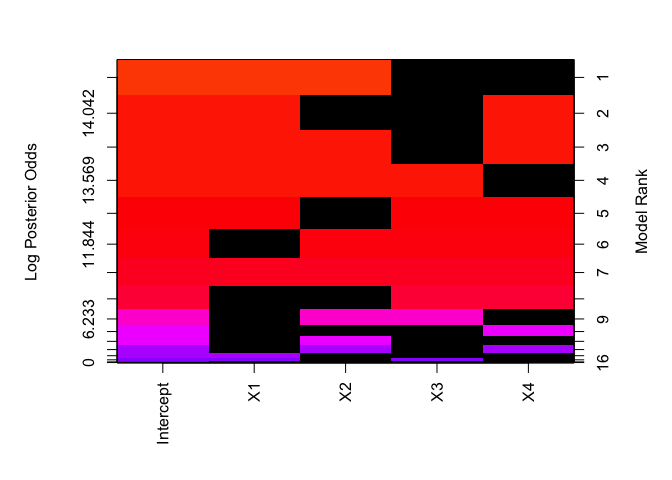

The BAS R package is designed to provide an easy to use package and fast code for implementing Bayesian Model Averaging and Model Selection in R using state of the art prior distributions for linear and generalized linear models. The prior distributions in BAS are based on Zellner’s g-prior or mixtures of g-priors for linear and generalized linear models. These have been shown to be consistent asymptotically for model selection and inference and have a number of computational advantages. BAS implements three main algorithms for sampling from the space of potential models: a deterministic algorithm for efficient enumeration, adaptive sampling without replacement algorithm for modest problems, and a MCMC algorithm that utilizes swapping to escape from local modes with standard Metropolis-Hastings proposals.
Installation
The stable version can be installed easily in the
R console like any other package:
install.packages('BAS')On the other hand, I welcome everyone to use the most recent version of the package with quick-fixes, new features and probably new bugs. It’s currently hosted on GitHub. To get the latest development version from GitHub, use the devtools package from CRAN and enter in R:
devtools::install_github('merliseclyde/BAS')You can check out the current build and test coverage status courtesy Travis CI:  before installing.
before installing.
Installing the package from source does require compilation of C and FORTRAN code as the library makes use of BLAS and LAPACK for efficient model fitting. See CRAN manuals for installing packages from source under different operating systems.
Usage
To begin load the package:
The two main function in BAS are bas.lm and bas.glm for implementing Bayesian Model Averaging and Variable Selection using Zellner’s g-prior and mixtures of g priors. Both functions have a syntax similar to the lm and glm functions respectively. We illustrate using BAS on a simple example with the famous Hald data set using the Zellner-Siow Cauchy prior via
BAS has summary, plot coef, predict and fitted functions like the lm/glm functions. Images of the model space highlighting which variable are important may be obtained via
image(hald.ZS)
Run demo("BAS.hald") or demo("BAS.USCrime") or see the package vignette for more examples and options such as using MCMC for model spaces that cannot be enumerated.
Generalized Linear Models
BAS now includes for support for binomial and binary regression and Poisson regression using Laplace approximations to obtain Bayes Factors used in calculating posterior probabilities of models or sampling of models. Here is an example using the Pima diabetes data set with the hyper-g/n prior:
library(MASS)
data(Pima.tr)
Pima.hgn = bas.glm(type ~ ., data=Pima.tr, method="BAS", family=binomial(),
betaprior=hyper.g.n(), modelprior=uniform())Note, the syntax for specifying priors on the coefficients in bas.glm uses a function with arguments to specify the hyper-parameters, rather than a text string to specify the prior name and a separate argument for the hyper-parameters. bas.lm will be moving to this format sometime in the future.
Feature Requests and Issues
Feel free to report any issues or request features to be added via the github issues page.
For current documentation and vignettes see the BAS website
Support
This material is based upon work supported by the National Science Foundation under Grant DMS-1106891. Any opinions, findings, and conclusions or recommendations expressed in this material are those of the author(s) and do not necessarily reflect the views of the National Science Foundation.